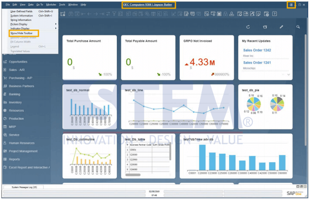
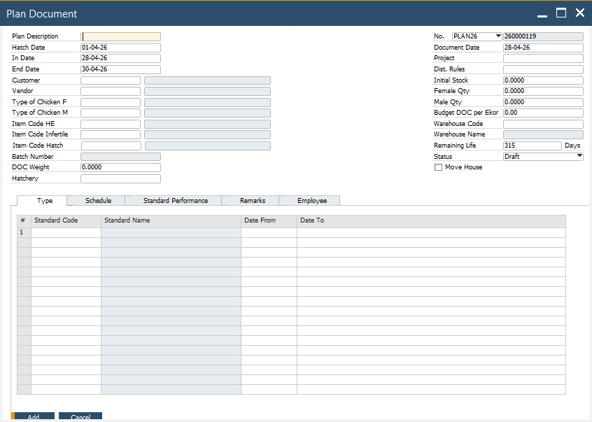
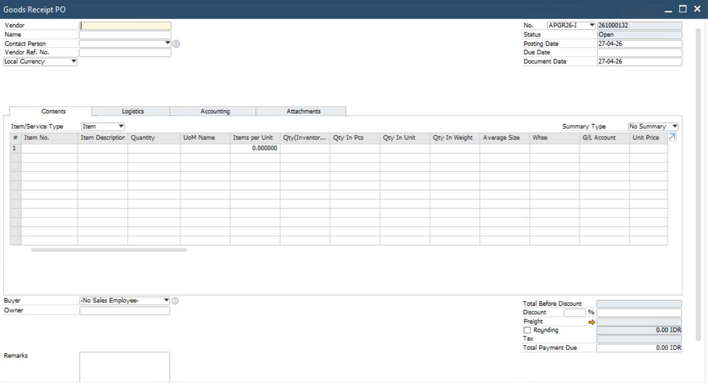
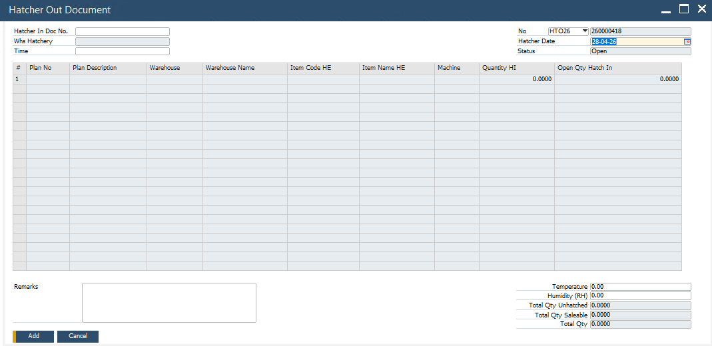
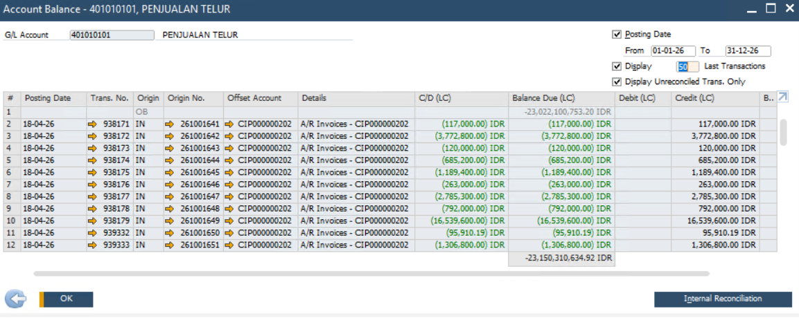
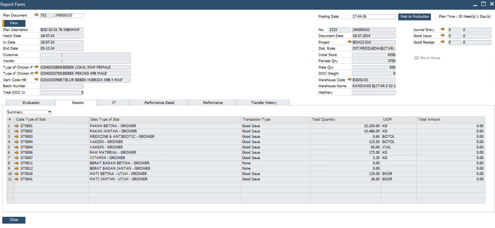

SAP Business Solution untuk Kontrol Operasional dan Keuangan Peternakan
SAP menjadi fondasi ERP yang menyatukan transaksi inventory, purchasing, finance, sales, costing, dan report farm. Data dari iFLOCS dan iREAPBIZ dapat diarahkan ke SAP agar proses lapangan tetap mudah, sementara kontrol perusahaan tetap rapi.

SAP sebagai Pusat Data Bisnis
Dalam ekosistem STEM, SAP diposisikan sebagai system of record untuk transaksi resmi perusahaan. iFLOCS menangkap transaksi operasional farm, iREAPBIZ menangani workflow bisnis dan finance request, lalu data yang sudah tervalidasi dapat masuk ke SAP untuk pencatatan, kontrol biaya, dan laporan manajemen.
Data Lapangan Lebih Mudah Diinput
User farm dan operasional dapat menggunakan aplikasi web yang lebih sederhana tanpa harus selalu membuka SAP secara langsung.
Transaksi Tetap Terkontrol
Data yang masuk ke SAP dapat melewati validasi, mapping master data, approval, dan otorisasi sesuai kebutuhan perusahaan.
Report Farm dan Finance Lebih Siap
Transaksi inventory, costing, dan performa farm dapat dibaca sebagai dasar laporan operasional serta laporan keuangan.
Alur Integrasi iFLOCS dan iREAPBIZ ke SAP
Integrasi dapat dibuat bertahap sesuai kesiapan proses bisnis customer. Prinsipnya, aplikasi web menjadi layer input dan workflow, sedangkan SAP menjadi pusat posting, kontrol, dan report resmi perusahaan.
Kapabilitas SAP untuk Operasional Peternakan
SAP membantu perusahaan menyatukan proses pembelian, stok, pemakaian material, biaya operasional, penjualan, finance, dan report farm dalam satu sistem yang terkontrol. Setiap transaksi dapat ditelusuri dari proses awal sampai menjadi laporan untuk manajemen.
Kontrol Keuangan Perusahaan
Membantu finance mencatat biaya, pembayaran, hutang piutang, jurnal, dan laporan keuangan dengan data yang lebih konsisten.
Pembelian dan Stok Terintegrasi
Mengelola pembelian, penerimaan barang, perpindahan stok, pemakaian material, warehouse, vendor, dan kontrol saldo item.
Analisa Biaya Operasional
Memantau biaya berdasarkan farm, kandang, unit kerja, project, dan pemakaian material untuk membantu analisa profitabilitas.
Report Performa Farm
Melihat performa flock, pemakaian pakan, obat, vitamin, mortalitas, produksi, FCR, dan indikator operasional lain.
Penjualan dan Distribusi
Mengelola proses penawaran, order, pengiriman, invoice, customer, dan monitoring penjualan yang terhubung ke finance.
Laporan Manajemen
Menyajikan ringkasan stok, pembelian, biaya, performa farm, dan posisi keuangan untuk mendukung keputusan bisnis.
Tampilan Proses SAP
Area ini disiapkan untuk screenshot SAP. Saat file screenshot sudah tersedia, gambar akan otomatis tampil di kartu sesuai nama file yang dipakai.
Purchase Order
Menunjukkan kontrol pembelian, vendor, item, quantity, dan referensi dokumen sebelum penerimaan barang.

Goods Receipt Purchase Order
Menampilkan proses penerimaan barang dari PO yang dapat berasal dari transaksi GRPO iFLOCS atau iREAPBIZ.

Inventory Posting
Memperlihatkan mutasi stok, pemakaian material, goods issue, warehouse, dan dampaknya ke saldo inventory.

Financial Document
Membantu finance menelusuri jurnal, biaya, pembayaran, dan dokumen yang berasal dari proses operasional.

Farm Report
Report farm untuk membaca performa operasional, pemakaian material, cost allocation, FCR, produksi, dan indikator manajemen.

Integrasi per Produk
SAP tidak harus menjadi aplikasi yang diakses semua user. Dengan aplikasi web pendukung, user lapangan tetap bisa bekerja cepat, sementara data penting tetap dapat masuk ke SAP secara terstruktur.
iFLOCS ke SAP
Transaksi farm seperti GRPO, transfer, goods issue, dan report phase dapat menjadi sumber data inventory dan costing.
iREAPBIZ ke SAP
Workflow bisnis seperti sales quotation, receipt payment, petty cash, dan finance request dapat disiapkan untuk SAP.
SAP ke Management Report
Data yang sudah konsisten dapat dipakai untuk laporan stok, pembelian, biaya, performa farm, dan financial summary.
Value yang Ditawarkan ke Customer
Fokus utamanya adalah membuat SAP lebih bernilai bagi perusahaan: data lebih cepat masuk, proses lebih terkontrol, dan laporan manajemen lebih mudah dipercaya.
Mengurangi Double Input
Transaksi operasional dari aplikasi web dapat diarahkan ke SAP sehingga proses rekap manual berkurang.
Kontrol Otorisasi
Akses data dapat dibatasi berdasarkan role, area kerja, warehouse, cost center, plan, dan approval.
Report Farm Terhubung
Performa farm, pemakaian material, dan biaya dapat dianalisa dalam konteks inventory dan finance.
Finance Lebih Akurat
Data inventory dan biaya operasional lebih rapi untuk rekonsiliasi, jurnal, dan laporan keuangan.
Siap Multi Farm
Struktur SAP dapat mendukung banyak farm, warehouse, unit bisnis, dan perusahaan dalam satu ekosistem.
Keputusan Lebih Cepat
Manajemen dapat membaca kondisi operasional dan financial tanpa menunggu rekap manual yang lambat.
SAP sebagai Fondasi, Aplikasi Web sebagai Akselerator Operasional
STEM membantu customer merancang arsitektur SAP dan aplikasi web terintegrasi agar transaksi lapangan, workflow bisnis, finance, inventory, dan report farm berjalan dalam satu data flow yang lebih rapi.